AlphaZero from Scratch
Nick Petosa, Robert Keezer, Nupur ChatterjiFall 2018 CS 4803 / 7643 Deep Learning: Class Project
Georgia Institute of Technology
Link to Github Repo
Abstract
We were inspired by DeepMind's AlphaZero - a general algorithm that can learn to master a game just from its rules, without any prior knowledge or expert-played games to learn from. The AlphaZero algorithm uses a combination of deep convolutional neural networks and tree search, leveraging Monte Carlo Tree Search (MCTS) and a deep learning heuristic in order to traverse through various promising game states. AlphaZero is a generalization of DeepMind's AlphaGo Zero, a self-learning algorithm specifically designed for the game of Go.
For our project, we implemented the AlphaZero algorithm completely from scratch and tested it on small games such as Tic-Tac-Toe and Connect-4. Additionally, we experimented using a state of the art Squeeze-and-Excitation Network (SENet) as part our architecture. This is a novel angle, as SENets have not been integrated with AlphaZero in any existing literature.
Our results show that our implementation is able to successfully self-learn strong policies for Tic-Tac-Toe and Connect-4.
| 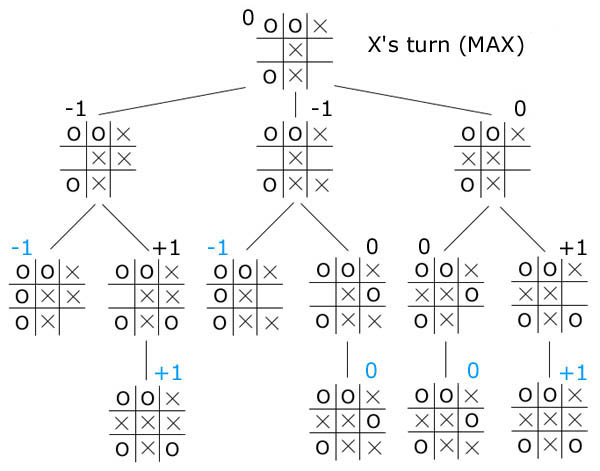 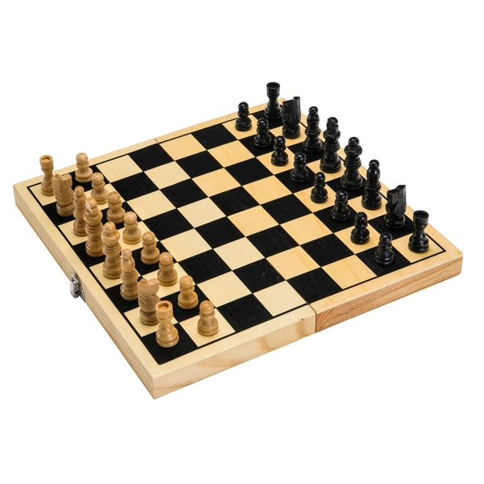 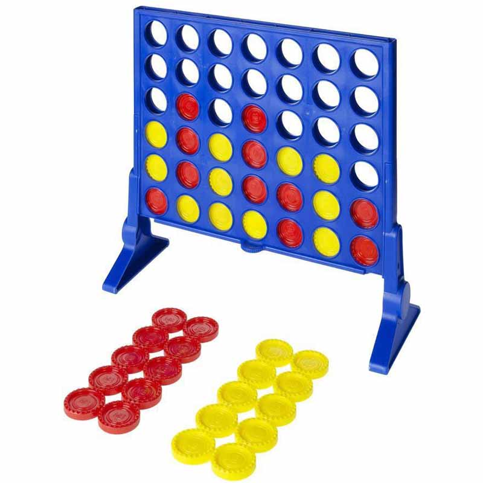 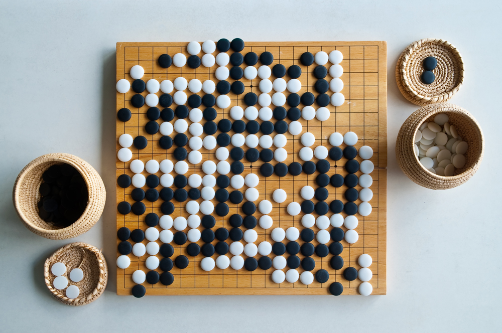 |
Introduction and Motivation
What did you try to do? What problem did you try to solve? Articulate your objectives using absolutely no jargon.
Our goal was to independently re-create an implementation of AlphaZero and test it on games like Tic-Tac-Toe and Connect-4. We also wanted to evaluate performance across different network architectures, including the novel Squeeze-and-Excitation Network (SENet).
Since the algorithm is generalized, we should be able to plug AlphaZero into any discrete, deterministic game with perfect information and find powerful policies through self-play. Just like the results of the original paper, we wanted to show that the algorithm would be able to learn how to play (and win!) a game based solely on its game-play rules - we would not provide the algorithm with any other information such as game trajectories by grandmasters etc.
How is it done today, and what are the limits of current practice?
Currently, AlphaZero is at the forefront of systems that can learn by themselves (i.e. through self-play) and master highly complex games (such as Chess and Go). AlphaZero's key benefit lies in the fact that it does not use any annotated data to learn strong policies.
The AlphaZero algorithm is straightforward, but nobody has yet been able to replicate the results that DeepMind achieved on Chess or Go because of the sheer computational power required. This is also our main limitation - we will not be able to exactly replicate DeepMind's results because we do not have Tensor Process Units (TPUs) at our disposal. There are notable community-driven efforts to pool computation for the purposes of independently replicating DeepMind's performance with Go and Chess, namely Leela Zero and Leela Chess Zero, respectively. There are also several groups that have successfully leveraged AlphaZero to learn easier games like Othello. Of the available open source AlphaZero implementations, most are intricate, poorly documented, untested, or designed specifically for use with one game.
AlphaZero and MCTS are promising new self-play algorithms. Historically, Alpha-Beta Search and the Minimax strategy have been extensively used for machine playing of two-player games. Famously, IBM's Deep Blue program used Alpha-Beta Search to defeat world chess champion Garry Kasparov in 1997.
Regarding the games we will be learning, both Connect-4 and Tic-Tac-Toe are solved games. A solved game is one whose outcome (win, loss or tie) can be accurately determined from any position, assuming that both players play perfectly. In Connect-4, the first player can force a win, as proved in 1988 by James Allen and Victor Allis (independently of each other); while Tic-Tac-Toe is trivially solvable because its game tree is relatively small.
Who cares? If you are successful, what difference will it make?
Our aim is to implement from scratch a simple, fully-tested, and modular AlphaZero environment. We intend this setup to provide good headway for future AlphaZero research, like testing the potential of different types of deep networks, introducing multi-player games, etc. In the code bank, there is an extensive test bed that can be scaled up (perhaps using TPUs), and the modular nature of the code means that it is straightforward to swap out the game being learnt and the network being used to train.
Additionally, we can contribute the first documented results of an SENet being used within AlphaZero. We hope that our results with SENet will be exciting and encourage other researchers to integrate Squeeze-and-Excitation into a new generation of AlphaZero agents.
Background
Monte Carlo Tree Search (MCTS)
At the heart of the AlphaZero algorithm is Monte Carlo Tree Search (MCTS) - a tree searching methodology used to determine the best move to make from the given board state. To understand how AlphaZero innovates on MCTS, it is important to first understand how vanilla MCTS works.
MCTS was developed in 2006 by Remi Coulom as a domain-independent policy search algorithm. MCTS works with games that are discrete, deterministic and have perfect information - this means that they must have distinct moves and positions, have fixed outcomes for each move, and players must compete against one another but can see everything that happens. Examples include Chess, Checkers, Go, Tic-Tac-Toe, Connect-4, and many other board games.

The MCTS API: given the current state of a game board, MCTS returns a distribution over actions indicating which moves are most likely to result in a win. To do this, MCTS iteratively builds a search tree node by node, starting from the current board state. In this tree, nodes are game states and directed edges are legal actions. This construction is done in a way that balances exploration and exploitation. For each edge we maintain W which is the sum of rewards from taking that action, and N which is the number of times we took that action. W and N are accumulated across iterations.
After many iterations, we can weight the actions from our current state by the number of times MCTS visited them. The action with the highest visit count has the highest probability of leading us to a win. Below is an example of how this might work from the starting state of Tic-Tac-Toe after 820 iterations.
| Iteration 0 | Iteration 820 | |
| 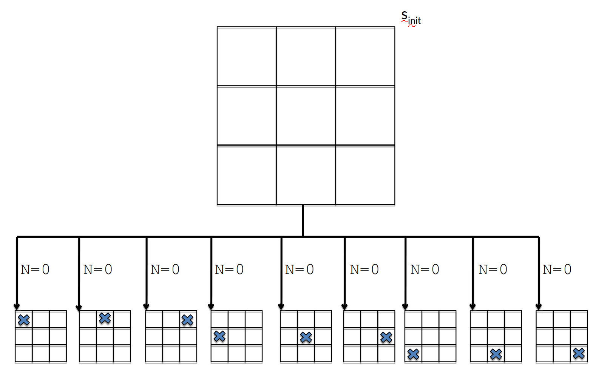 | 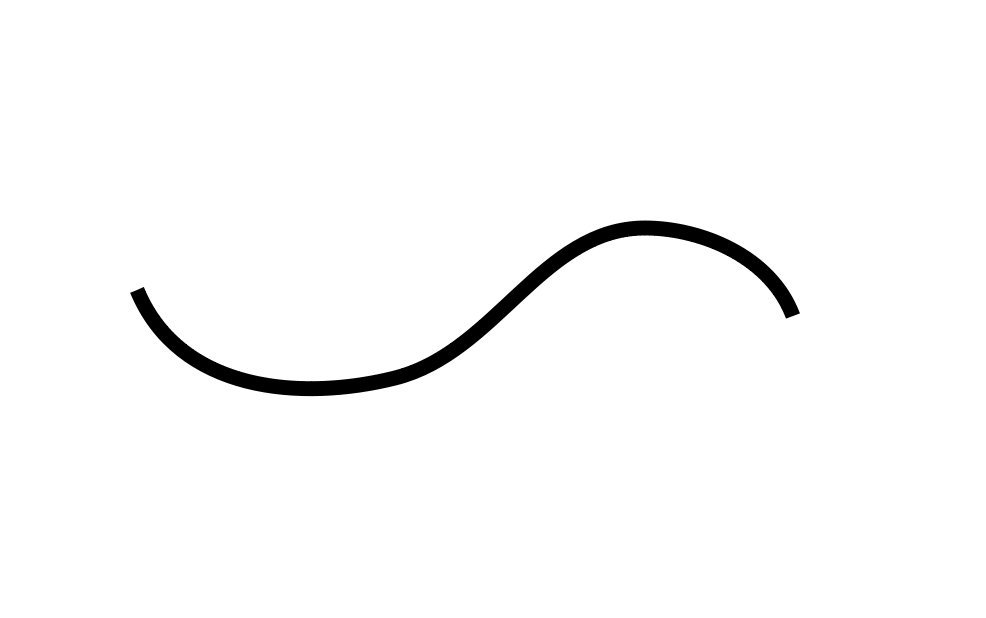 | 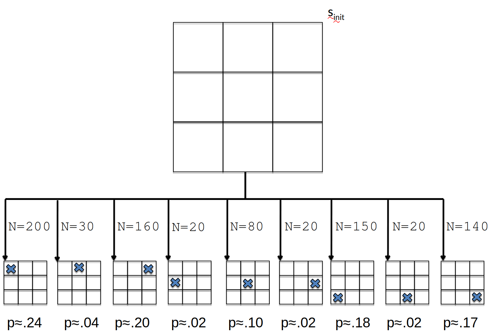 |
This policy search requires some thinking time - the more iterations you give MCTS, the better its policy will be. In each iteration, a series of Selection, Expansion, Simulation, and Backpropagation steps occur. Each iteration updates the search tree and improves the policy.

So we start at a board state and begin running iterations of MCTS. An interation is made up of the following 4 steps.
-
Selection. During selection, we crawl down our search tree, choosing nodes based off a simple exploration/exploitation heuristic; the action with the highest heuristic value gets chosen. The Selection phase stops once we hit a leaf node in our search tree. This leaf represents a board state and is what gets "Selected".
When MCTS is run on a new game, there will only be one node in its search tree to begin with. This node is the game's starting state sinit, and because it is the only node (and hence leaf) in the search tree so far, it trivially gets Selected. For a game like Tic-Tac-Toe this initial state would be an empty 3 by 3 board.
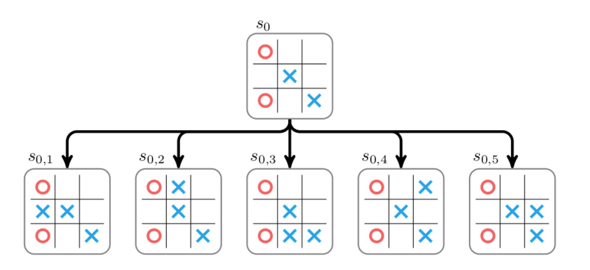
In the above example, we did not have to worry about choosing an action to traverse since the root itself was a leaf. Typically, we will have to traverse down our search tree to find a leaf, and a heuristic will guide which actions get selected at each level. The main challenge during Selection is maintaining a balance between the exploitation of moves we have found to be valuable and exploration of moves with relatively few simulations. The upper confidence tree (UCT) score is a popular MCTS heuristic that uses the edge statistics (W and N) to trade off exploitation (the first term of the expression) with exploration (the second term of the expression). The equation for UCT is shown below, where Wi is the accumulated reward of edge i, Ni is the visit count of the edge i, and Np is the sum of visit counts across all edges sharing a parent with i.
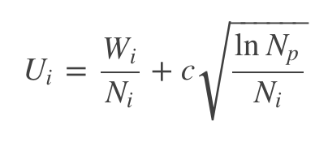
We have a free parameter here, c. Having a low value for c will encourage the algorithm to choose nodes with a high value W (exploit), while a low c value will encourage the search to pick nodes with a low visited count N (explore). The value of c is often set empirically.
-
Expansion. If our Selected node is not a terminal node (the game was won/lost/tied), then add each of its children to the tree. Again, a child is just a state you can reach through a legal move.
In the case of Tic-Tac-Toe, we would expand our selected node, sinit. Since there are 9 possible actions that can be taken from this state (9 positions that player X can make a move), and sinit is not a terminal state, we connect all 9 children to sinit, as shown below. The N and W statistics are shown along each edge, as well as the UCT heuristic (H) which is computed from N and W.
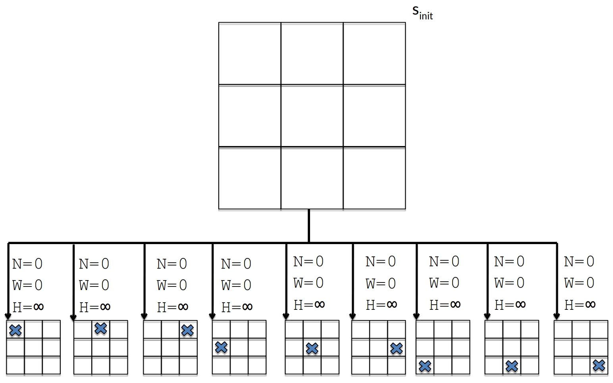
-
Simulation. The Expansion step opened up a pool of unexplored children, and we would like to associate values with these new actions. The first thing we do is use our heuristic to select which newly created child to simulate. If our heuristic is UCT, this just means picking one at random. From this selected child we do a Monte Carlo playout - we randomly select moves until we reach a terminal state, at which point the game is won (+1), lost (-1), or tied (+0). These simulated moves are not saved anywhere in the tree - they are used strictly for assigning a value to the child. If the selected node was already a terminal node, you can skip this simulation.
Returning to our Tic-Tac-Toe example, the circled node is the one that gets randomly picked for simulation.
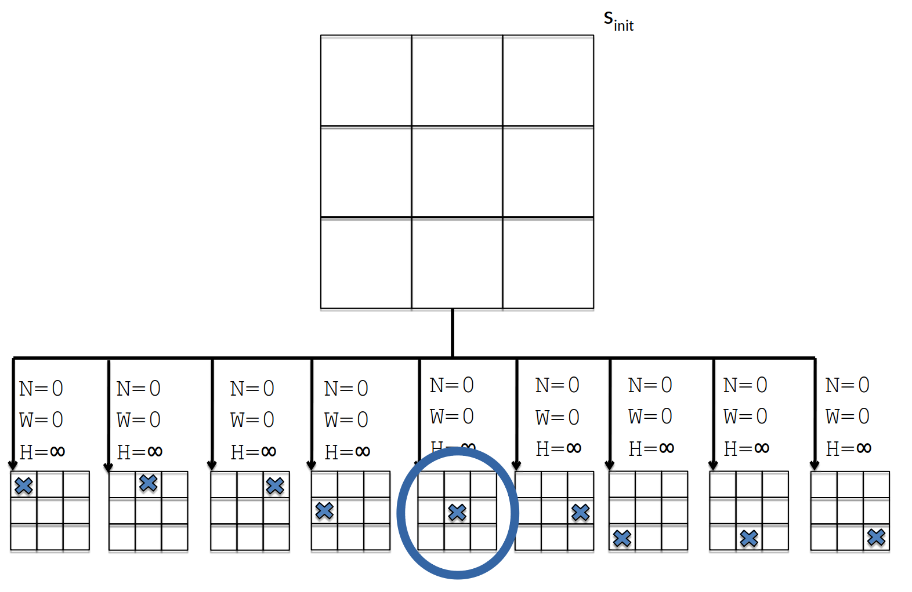
We now carry out the Simulation step by randomly playing out the game until we reach a terminal state. It is important to stress that this is a random playout and does not need to be optimal. For example, from the circled node above, one example of random playout might look like this:
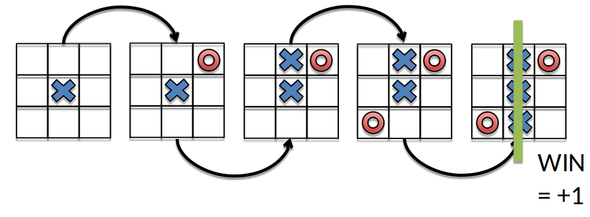
-
Backpropagation. The Monte Carlo playout provides us with information about the new child's value, specifically whether we won (+1), lost (-1) or tied (+0) after random play from that state. This outcome is added to the W statistic of each edge we traversed to get to the expanded state. The algorithm keeps track of the current player at each level and flips the sign of the reward as needed before adding it to W. Each N along the path is also incremented to indicate each move on the path was explored. By updating these statistics, Backpropagation helps inform the heuristic for future iterations.
As we follow our Tic-Tac-Toe example, we now see the W and N values updated, which also updates the heuristic H.

The MCTS will continue to run multiple iterations of Selection, Expansion, Simulation, and Backpropagation until time runs out and we are left with a policy at our root. At this point we take our turn in the game either by selecting the action that with the highest visit count or by sampling from our policy distribution. We move on to the next game state, which becomes our root node, and repeat MCTS all over again to find our next best move.
AlphaZero
mcts.py |
train.py |
Vanilla MCTS performs quite well. One of its earliest successes was in Crazy Stone, a Go agent that defeated a professional Go player in 2008, with a small handicap. These results showed that MCTS was a promising direction that could be further pursued.
With this knowledge, DeepMind innovated to create a line of "deepified" MCTS agents. For AlphaZero, DeepMind uses a 40-layer, two-headed convolutional ResNet to map an input board state to both a value scalar output and a policy vector output. The value scalar output (v) is a tanh activation indicating how likely the given board state is to result in a win (1), loss (-1), or tie (0). The policy vector softmax output (P) is a prior distribution over valid actions from the given board state.
| 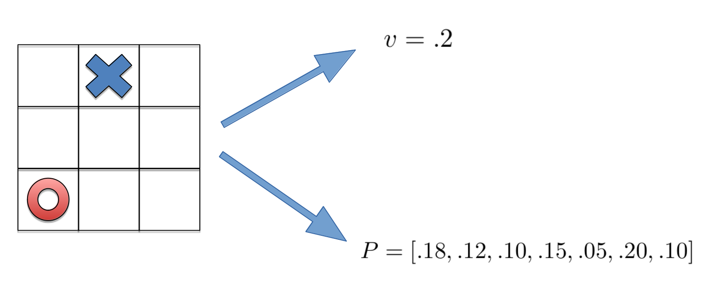 |
Using the outputs from this network, "deepifying" MCTS takes just two changes.
-
The UCT heuristic is updated to include Pi, the prior probability of taking action i. This change makes our heuristic more efficient because it prevents actions with really bad prior probabilities from being over-explored.
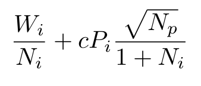 -
Random playouts during the MCTS Simulation step are removed. Instead, we treat our network's value scalar output v as the approximated value of a roll-out. Using a deep network to infer state is more accurate than a single random roll-out and generalizes to new states we might encounter during competitive play. The value scalar v gets Backpropagated up the tree, and is thereby integrated into the W term of our heuristic.
Now that a deep network has been integrated into the heuristic, we need to train it. To do this, we use MCTS as a powerful policy improvement operator. Initially, our network weights are all random, thus starting with a random policy.
Training proceeds as follows. We start at the initial board state of our game (s1). From here, run several iterations of MCTS to discover a probability distribution (π1) across valid actions. Now we take our turn by sampling from π1 to get to s2, and repeat the process until we eventually encounter a terminal state. This terminal state outcome z will be 1 for win, -1 for loss, or 0 for tie. After we have finished the game, we can generate a training sample for each turn (si, πi, z). After several games, we can use our collection of training samples to update our network parameters by minimizing the following loss function, which is just a sum of cross-entropy loss and mean squared error.
| 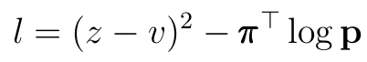 |
The beauty of this design means that as the deep network gets better over time, it also informs MCTS and makes the search process more efficient. The self-reinforcing cycle quickly snowballs and makes for an extremely powerful system.
The Squeeze-and-Excitation Network (SENet)
senet.py |
Our implementation of AlphaZero is highly modular. The modularity made it much easier to test different games and novel networks to train. One of the networks we plugged into our system was the Squeeze-and-Excitation Network (SENet). The introduction of SENets created waves when they were used in the ImageNet competition of 2017, improving the results from the previous year by a staggering 25%.
The main crux of the SENet is that it introduces parameters into each channel of a convolutional block, so that the network can adaptively adjust the weight of each feature map (a process known as feature recalibration).
In general, convolutional neural networks efficiently extract hierarchical information from their filters - in class we have seen that layers closer to the start of the network tend to find low-level features such as edges, while layers towards the end of the network, closer to the loss layer, are attuned to detecting faces or more complex scenes. The spatial and channel information are used in conjunction, and the network equally weights these channels when output maps are being created.
With the SENet, the aim is to weight each channel adaptively, so that it is more aware of the content in each channel. It wants to explicitly model channel interdependencies between its convolutional features. You can imagine how this might be useful for modeling relationships between the channels of a board state. A simple example would be adding one parameter to each channel and linearly scaling it based on how relevant each channel is.
In reality, the process is a little more complicated. A holistic understanding of each channel is garnered by squeezing the feature maps into a single value (by Average Pooling). Squeezing gives rise to a vector whose size is equal to the number of original convolutional channels. This vector is passed through a two-layer neural network and a sigmoid, creating a vector of the same size. The contents of this output vector are used as the weights of the original feature maps (they are now scaled based on relevance).
The diagram below shows how a ResNet module would be updated with the concepts from the SENet (adding the fully connected layers and the sigmoid layer).
A complete SENet is then created by stacking multiple of these layers (now called an SE Block, since it augments convolutional blocks) on top of each other.
A succinct overview of the SENet, by the authors, is shown below.
Approach
What did you do exactly? How did you solve the problem? Why did you think it would be successful? Is anything new in your approach?
We implemented AlphaZero from scratch and used it train an agent to master Tic-Tac-Toe and Connect-4. Our algorithm was implemented as described in the AlphaZero background section, and was programmed using Python, Numpy, and Pytorch. We believed that we would succeed because both games have a relatively small branching factor and few game states compared to a game like Go. We directly compare the performance of the algorithm across three different network architectures (including an SENet, which, from our survey of literature, has not been tried before).
What problems did you anticipate? What problems did you encounter? Did the very first thing you tried work?
One problem we anticipated was computation time. From the AlphaZero paper, training an agent to play Go took just 8 hours to master the game - but required over 5000 TPUs. The only resource we had access to was a GTX 1070 in a desktop machine running Ubuntu. It would take approximately 22 years to replicate DeepMind's Go program on our hardware! It was important to limit the scope of this project to something feasible with our hardware by picking a simpler game. Training a Tic-Tac-Toe agent was our immediate goal, and training a Connect-4 agent was our reach goal. Go has an average branching factor of 250 and about 2*10170 game states. Compare that to the simplicity of the other games: Tic-Tac-Toe has a maximum branching factor of 9 and about 5000 game states, and Connect-4 has a maximum branching factor of 6 and about 4.5 trillion game states.
Another problem we anticipated was the complexity of implementing AlphaZero from scratch. There are many intricate components like MCTS that are bug-prone. If any component was bugged, the entire AlphaZero pipeline would fail. To couteract this, we wrote extensive unit tests for each component during development. In total, we created 31 tests for our implementation.
An unanticipated problem that we encountered was AlphaZero's sensitivity to certain hyperparameters. AlphaZero works by generating games of self-play as training data, and then updating its network based off that experience. One tricky hyperparameter we had to tune was the number of self-play games executed per network between gradient descent updates. The AlphaZero paper offered no guidance on this value, so we initially started it at 1 - that is, 1 game generated per network followed by an update. We found that at this frequency learning was unstable - policies would change drastically between subsequent networks, impairing learning. After some experimenting, we found that generating at least 30 training data games per iteration enabled stable learning.
Hyperparameters
One of the attractive qualities of the AlphaZero paper is that DeepMind used the same hyperparameters across each game they trained it on. Similarly, after much trial and error, we arrived at a set of hyperparameters that worked well across different games and networks. Experimenting with different hyperparameters is expensive because AlphaZero takes a long time to train, so once we discovered a set of hyperparameters that yielded good performance across many games and networks we stopped tweaking.
Algorithm Hyperparameters| Hyperparameter | Our value | DeepMind value |
|---|---|---|
| Number of self-play games generated per network | 30 | Unspecified |
| Batch Size | 64 | 2048 |
| Number of batches per update | 1000 | Unspecified |
| MCTS iterations per turn | 50 | 800 |
| c (Heuristic exploration parameter) | 3 | Unspecified |
Network Hyperparameters
| Hyperparameter | Our value | DeepMind value |
|---|---|---|
| Optimizer | Adam | SGD+Momentum |
| Learning Rate | 1e-3 | 1e-2 -> 1e-4 |
| L2 Regularization | 1e-4 | 1e-4 |
To avoid overfitting, L2 regularization is set to 1e-4 as suggested in the AlphaZero paper. Generalization is important for this task because the network will only see a small subset of all possible boards during training. Generalization empowers the network to have a good sense as to whether a novel state encountered during play is promising, which is useful if the game enters unknown territory.
Experiments and Results: Overview
How did you measure success? What experiments were used? What were the results, both quantitative and qualitative? Did you succeed? Did you fail? Why?
Since we experimented with two separate games, we will report the results for both games separately. Overall, our implementation of AlphaZero was successful with both games. We experimented with three different network architectures, described below.
| Name | Description | Number of parameters |
|---|---|---|
| MLP | Two-layer fully connected network with 200 hidden units. | 7,610 |
| Mini/Small VGG | Two-layer convolutional network with 2x2 or 4x4 filters. | ~40,000 |
| SENet | A deeper (4-layer) Squeeze-and-Excitation convolutional network. | 11,260,354 |
Each of these networks has a value head and policy head as described in the AlphaZero background section. These models are quite anemic compared to the 40-layer ResNet used by DeepMind, but our hope was that simpler games could be learned with simpler models.
Experiments and Results: Tic-Tac-Toe
About Tic-Tac-Toe
Tic-Tac-Toe is played on a 3x3 board. Players alternate turns placing an X or O in an open spot. If a player gets three of their symbols in a row, they win. Tic-Tac-Toe is a solved game - optimal play from both players will result in a tie.
State Representation
Each board state as passed to the network is represented by a 3x3x3 tensor made up of 1's and 0's. The first plane contains a 1 at every location player 1 (X) has a piece. The second plane contains a 1 at every location player 2 (O) has a piece. The third plane is all 0's if it's player 1's turn, or all 1's if it's player 2's turn.
Training Error
One measure of success is how well the network learned from self-play data. We can analyze the training loss curve of our networks. The lower the loss achieved, the more successful of a heuristic was learned. Training error only tells us how successful our network is during self-play - it does not necessarily generalize to real-world games. That said, assuming proper regularization, lower training error means a smarter agent.
Regardless of architecture choice, with more and more iterations of training, train error decreases. This result on its own is exciting; deep RL techniques are notoriously unstable, yet looking at this graph we see stable learning. Network architecture has a noticeable impact on error - the two layer fully-connected MLP has higher error after the same number of iterations as the shallow CNN (MiniVGG) or deep CNN (SENet). For a simple game like Tic-Tac-Toe, making our network deeper does not confer a significant advantage over using a shallower network, but convolutions certainly did help.
Generalized Performance
So the convolutional networks have lower self-play training error, but we would like to know how well they generalize. To test the general strength of each network, we developed a novel benchmark: each agent plays against vanilla MCTS agents of increasing strength and records its win rate. Vanilla MCTS agents do not use a deep heuristic; they use the UCT heuristic discussed earlier. After each turn, the number of MCTS iterations used by the opponent doubles, starting from 10 and ending at 20,480. This allows the opponent to use much more time to explore possible moves (a few minutes) before taking a turn. In this way, we can compare the relative strengths of the networks against an identical opponent to get a better idea of how well their strategies generalize outside of self-play. The performance of these networks against increasingly stronger opponents is plotted below.
| 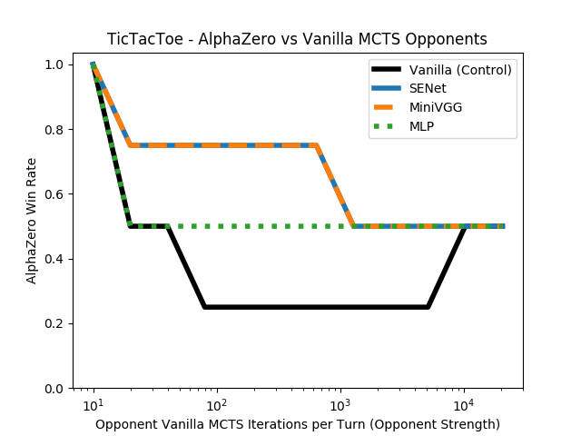 |
|
Just like before, the convolutional networks out-perform the MLP network. The convolutional networks have a higher average win rate against general opponents, suggesting that they learned a stronger heuristic than the fully connected network.
As you might expect, as opponent strength increases, AlphaZero's win rate starts to decrease. Win rate converges to 50%, which makes sense since optimal Tic-Tac-Toe play is known to end in a tie. All of our networks seemed to learn how to force a tie, though the convolutional networks also learned how to exploit weaker opponents and pull off more wins.
Recall from our hyperparameter discussion that our trained AlphaZero agents use 50 MCTS iterations per turn, guided by a deep heuristic. For comparison, we have also plotted a 50-iteration vanilla MCTS agent as a control in black. For each opponent, our networks meet or beat the win rate of the control, showing that the learned heuristics are meaningful and superior to vanilla UCT.
From these results, we see that our deep heuristic makes MCTS wildly more efficient compared to the vanilla MCTS UCT heuristic.
Filter Visualization
Here are some visualizations of filters from the first convolutional layer of the Tic-Tac-Toe SENet. Strong red colors indicate responses to the first player's pieces, and blue colors indicate responses to the second player's pieces. Purplish blends indicate responses to both. The semantic purpose of each filter is not obvious, but we do know these filters are extracting board patterns that are significant to making decisions.
| 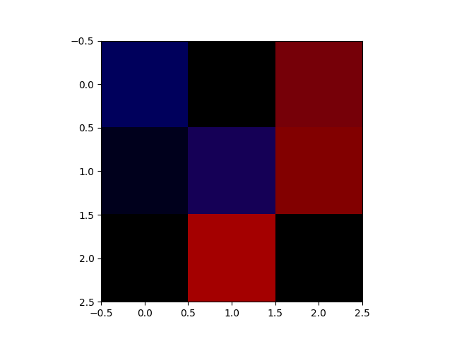 | 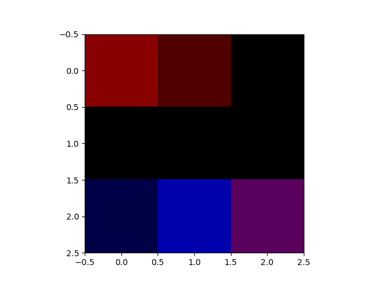 | 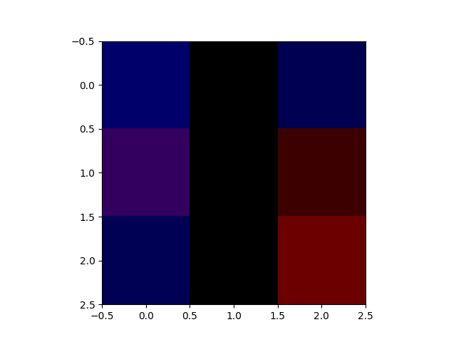 | 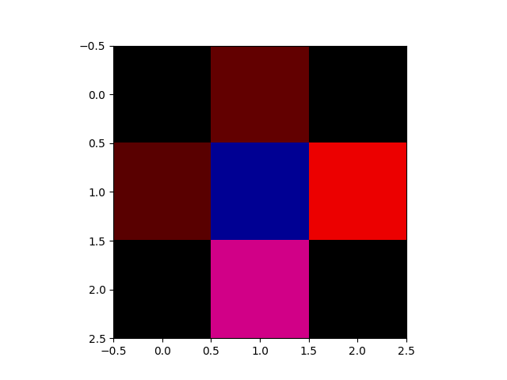 |
| 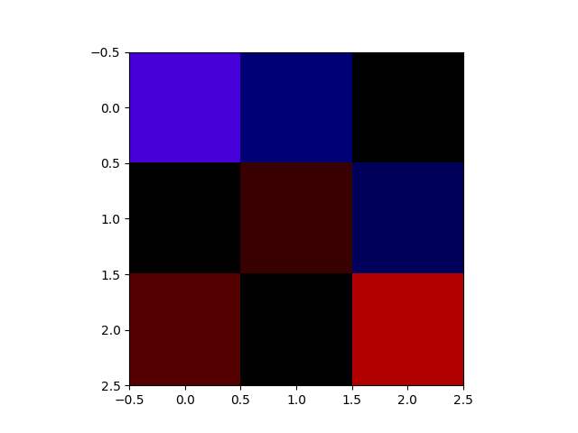 | 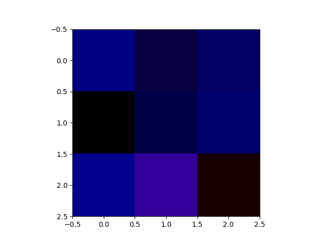 |  |
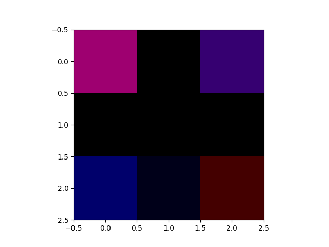 |
Human Competitor
The true test of an AlphaZero agent is its performance against a competent human opponent. Below is a table of human competitors who played against the Tic-Tac-Toe SENet AlphaZero agent, and the game outcomes. 50% of the time the human played first, and 50% of the time the AI played first. Note that these are non-professional players. A win rate of 50% implies that the human is just as strong as the AI.
| Human | Human Wins | Ties | Human Losses | Human win rate |
|---|---|---|---|---|
| Maria | 0 | 6 | 4 | 30% |
| Ethan | 0 | 5 | 1 | 42% |
| Chaitya | 0 | 4 | 2 | 33% |
| Will | 0 | 3 | 1 | 38% |
The average human win rate against the AI is 36%, so the average AI win rate is 64%. Our AI is therefore stronger than a competent (non-expert) human.
Experiments and Results: Connect-4
About Connect-4
Connect-4 is a two-player game where players take turns dropping discs into a seven-column, six-row grid. The first player to get 4 of their discs in a row wins. Connect-4 is a solved game: the first player can force a win by playing the right moves.
State Representation
State representation is very similar to that of Tic-Tac-Toe. Each board state as passed to the network is represented by a 6x7x3 tensor made up of 1's and 0's. The first plane contains a 1 at every location player 1 has a piece. The second plane contains a 1 at every location player 2 has a piece. The third plane is all 0's if it's player 1's turn, or all 1's if it's player 2's turn.
Training Error
As with Tic-Tac-Toe, we can use training loss to gauge how well the networks learned from self-play data.
Unlike with Tic-Tac-Toe, not all of our loss curves decrease over iterations. Now, only the deep network appears to stably decrease, while the shallow MLP and CNN actually have increasing training error over iterations. We have a few theories as to why this is happening:
- Model capacity is too small. The shallow networks are too simple to capture the complexity of Connect 4 play. Adding more parameters and layers might improve performance, as we see with SENet.
- Learning rate is too high. SENet uses batch normalization, while the other networks do not, potentially enabling it to train with a higher learning rate than the other networks.
Verifying these hypotheses requires more experimentation and is left as future work.
Generalized Performance
The SENet has the lowest self-play training error, but we would like to know how well it generalizes compared to the other networks. We use the same methodology as with Tic-Tac-Toe to test how well the agents generalizes. The performance of these networks against increasingly stronger opponents is plotted below.
| 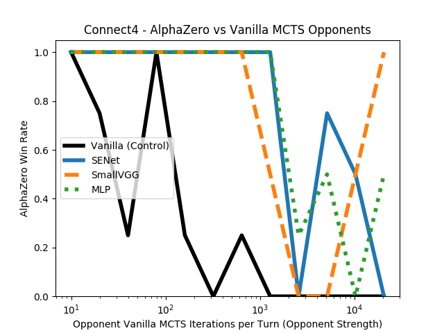 |
|
Again, as you might expect, as opponent strength increases, AlphaZero's win rate starts to decrease. Contrary to what we saw with Tic-Tac-Toe, we do not appear to converge to an optimal solution. As mentioned earlier, Connect-4 is a solved game - the first player can force a win. If both AlphaZero and the benchmark were playing optimally, we would expected win rate to converge to 50% (win when playing first, lose when playing second, therefore winning half the games). However, that is not what we are seeing. For each of the networks, there is a match our win rate hits 0% - if our agents were playing optimally, this would never happen. Even though we did not converge on optimal play, we still learned a very strong heuristic. See the Human Competitor section for a demonstration.
Surprisingly, all networks perform about the same against vanilla MCTS opponents. Despite training error diverging for the shallower networks, they generalize just as well as SENet. This is definitely a surprising result.
Again, we plot a 50-iteration vanilla MCTS control agent in black for comparison. At each opponent, our networks meet or beat the win rate of the control. This shows that even though we failed to learn the optimal strategy, we still learned a heuristic that is strictly better than UCT. Even with our current heuristic, if we allow our MCTS to perform more than 50 iterations (800 was used for Go), we will likely converge on optimal play, though we would require more thinking time. Mastery is just a matter learning a smarter heuristic through more training time and hyperparameter tuning.
Filter Visualization
Here are some visualizations of filters from the first convolutional layer of the Connect 4 SENet. As before, strong red colors indicate responses to the first player's pieces, blue colors indicate responses to the second player's pieces, and purplish blends indicate responses to both. Again, the semantic purpose of each filter is not immediately clear, but we do know they are definitely extracting board patterns that are significant to making decisions during game-play.
| 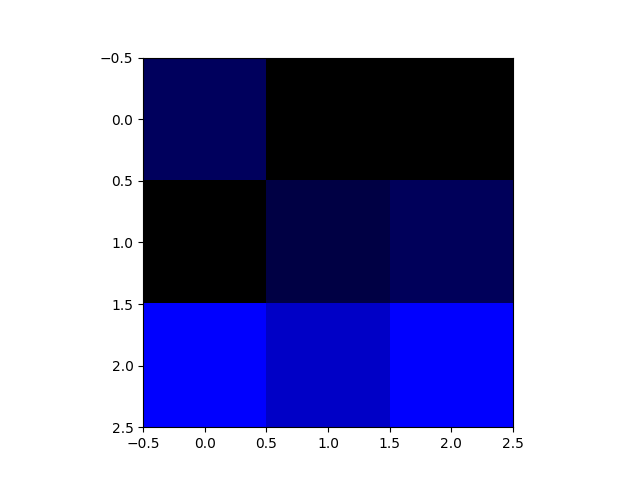 | 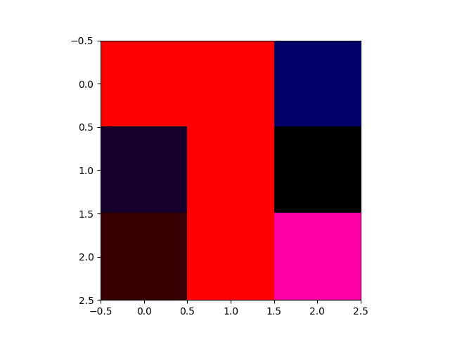 | 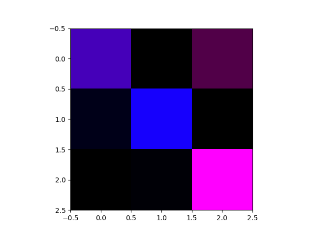 | 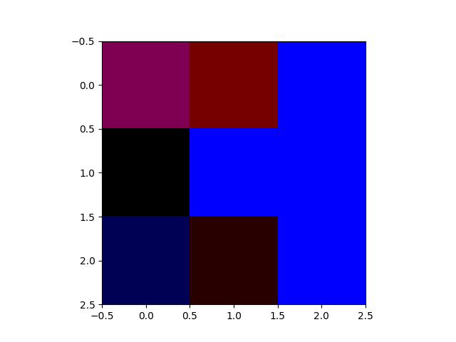 |
| 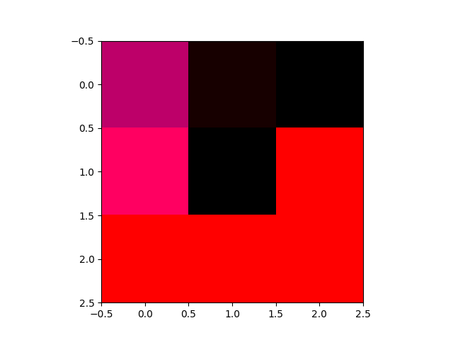 | 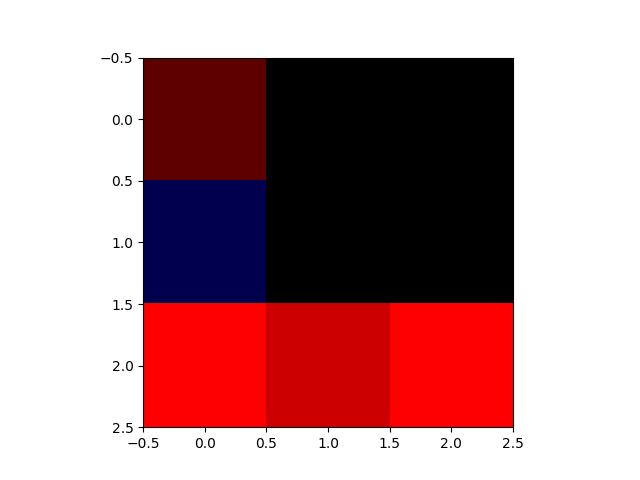 | 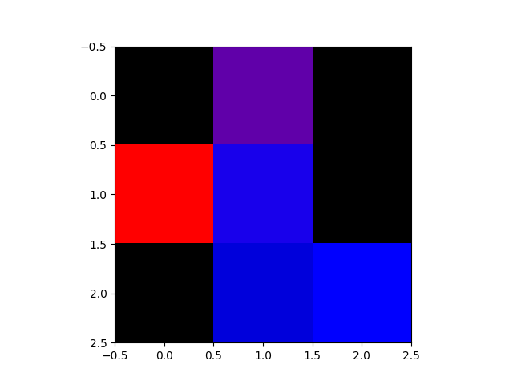 | 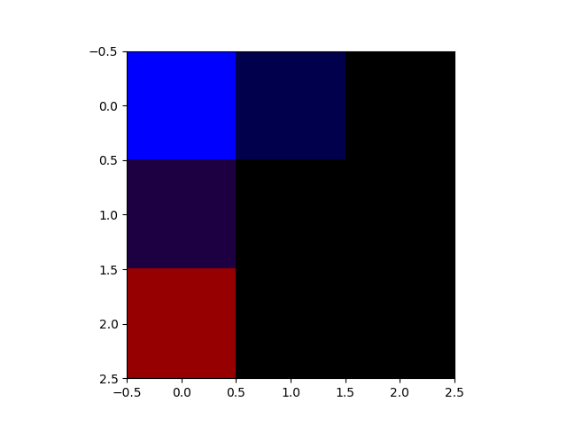 |
Human Competitor
Below is a table of human competitors who played against the Connect-4 SENet AlphaZero agent, and the game outcomes. The human played first 50% of the time, and the AI played first 50% of the time. Note that these are non-professional players. A win rate of 50% implies that the human is just as strong as the AI.
| Human | Human Wins | Ties | Human Losses | Human win rate |
|---|---|---|---|---|
| Maria | 1 | 0 | 5 | 17% |
| Ethan | 1 | 0 | 7 | 13% |
| Chaitya | 0 | 0 | 8 | 0% |
| Will | 0 | 0 | 4 | 0% |
The average human win rate against the AI is 8%, so the average AI win rate is 92%. Our AI is therefore much stronger than a competent (non-expert) human.
Relation to Deep Learning
What was the structure of your problem? How did the structure of your model reflect the structure of your problem?
This is addressed in the AlphaZero background section. Our model has both a value and policy head because of the structure of our problem.What parts of your model had learned parameters (e.g., convolution layers) and what parts did not (e.g., post-processing classifier probabilities into decisions)?
The entire model we defined is made of learnable parameters, except of course activation functions, softmax, and pooling layers. The MCTS is one part of our pipeline that does not have learnable parameters.What representations of input and output did the neural network expect? How was the data pre/post-processed?
The input state representations are discussed in the Tic-Tac-Toe and Connect-4 results section. The value/policy outputs are discussed in the AlphaZero background section.What was the loss function?
This is discussed in the AlphaZero background section.Did the model overfit? How well did the approach generalize?
Generalization is discussed in the Generalized Performance and Human Competitor sections of the Experiments and Results sections.What hyperparameters did the model have? How were they chosen? How did they affect performance? What optimizer was used?
Hyperparameters and optimizer is discussed in the Approach section.What Deep Learning framework did you use?
Pytorch.What existing code or models did you start with and what did those starting points provide?
Everything was built from scratch.Bibliography
AlphaZero Sources
- https://arxiv.org/pdf/1712.01815.pdf
- https://deepmind.com/documents/119/agz_unformatted_nature.pdf
- http://stanford.edu/~cpiech/cs221/apps/deepBlue.html
- https://github.com/suragnair/alpha-zero-general/raw/master/pretrained_models/writeup.pdf
MCTS Sources
- http://tim.hibal.org/blog/alpha-zero-how-and-why-it-works/
- https://en.wikipedia.org/wiki/Solved_game
- https://en.wikipedia.org/wiki/Monte_Carlo_tree_search
SENet Sources
- https://towardsdatascience.com/squeeze-and-excitation-networks-9ef5e71eacd7
- http://image-net.org/challenges/talks_2017/SENet.pdf
- https://www.groundai.com/project/squeeze-and-excitation-networks/